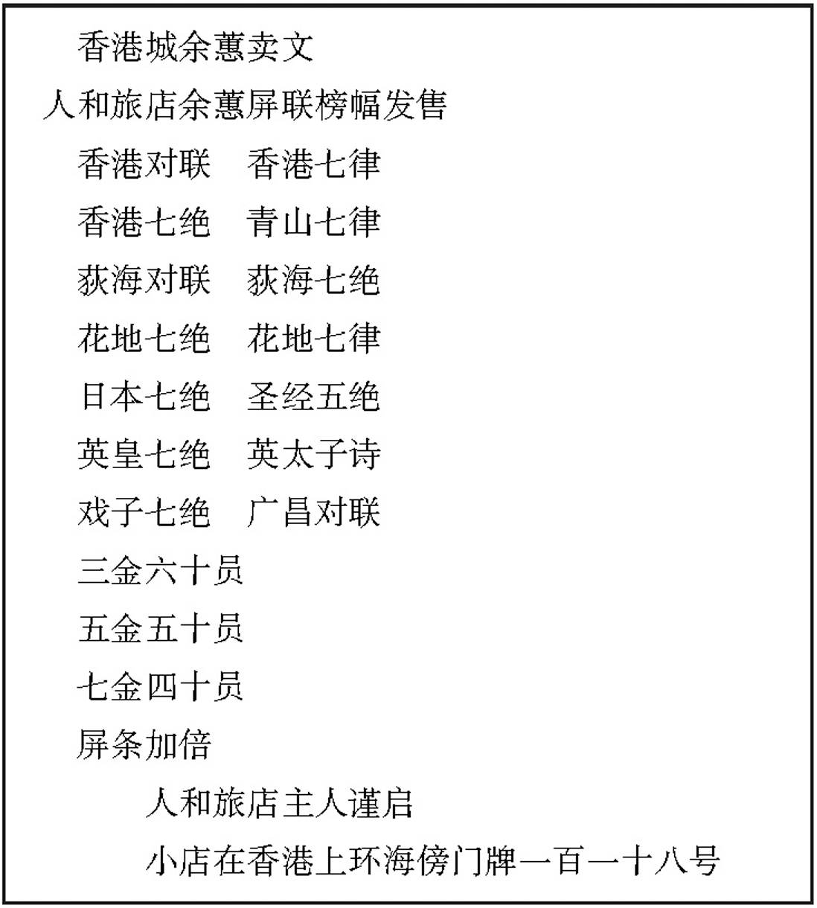

本年一月间我曾去过一回香港[27]，因为跌伤的脚还未全好，不能到街上去闲走，演说一了，匆匆便归，印象淡薄得很，也早已忘却了香港了。今天看见《语丝》一三七期上辰江先生的通信[28]，忽又记得起来，想说几句话来凑热闹。
我去讲演[29]的时候，主持其事的人大约很受了许多困难，但我都不大清楚。单知道先是颇遭干涉，中途又有反对者派人索取入场券，收藏起来，使别人不能去听；后来又不许将讲稿登报，经交涉的结果，是削去和改窜了许多。
然而我的讲演，真是“老生常谈”，而且还是七八年前的“常谈”。
从广州往香港时，在船上还亲自遇见一桩笑话。有一个船员，不知怎地，是知道我的名字的，他给我十分担心。他以为我的赴港，说不定会遭谋害；我遥遥地跑到广东来教书，而无端横死，他——广东人之一——也觉得抱歉。于是他忙了一路，替我计画，禁止上陆时如何脱身，到埠捕拿时如何避免。到埠后，既不禁止，也不捕拿，而他还不放心，临别时再三叮嘱，说倘有危险，可以避到什么地方去。
我虽然觉得可笑，但我从真心里十分感谢他的好心，记得他的认真的脸相。
三天之后，平安地出了香港了，不过因为攻击国粹，得罪了若干人。现在回想起来，像我们似的人，大危险是大概没有的。不过香港总是一个畏途。这用小事情便可以证明。即如今天的香港《循环日报》[30]上，有这样两条琐事：
▲陈国被控窃去芜湖街一百五十七号地下布裤一条，昨由史司判笞十二藤云。
▲昨晚夜深，石塘嘴有两西装男子，……遇一英警上前执行搜身。该西装男子用英语对之。该英警不理会，且警以□□□。于是双方缠上警署。……
第一条我们一目了然，知道中国人还在那里被抽藤条。“司”当是“藩司”“臬司”[31]之“司”，是官名；史者，姓也，英国人的。港报上所谓“政府”，“警司”之类，往往是指英国的而言，不看惯的很容易误解，不如上海称为“捕房”之分明。
第二条是“搜身”的纠葛，在香港屡见不鲜。但三个方围不知道是甚么。何以要避忌？恐怕不是好的事情。这□□□似乎是因为西装和英语而得的；英警嫌恶这两件：这是主人的言语和服装。颜之推以为学鲜卑语，弹琵琶便可以生存的时代[32]，早已过去了。
在香港时遇见一位某君，是受了高等教育的人。他自述曾因受屈，向英官申辩，英官无话可说了，但他还是输。那最末是得到严厉的训斥，道：“总之是你错的：因为我说你错！”
带着书籍的人也困难，因为一不小心，会被指为“危险文件”的。这“危险”的界说，我不知其详。总之一有嫌疑，便麻烦了。人先关起来，书去译成英文，译好之后，这才审判。而这“译成英文”的事先就可怕。我记得蒙古人“入主中夏”时，裁判就用翻译。一个和尚去告状追债，而债户商同通事，将他的状子改成自愿焚身了。官说道好；于是这和尚便被推入烈火中。[33]我去讲演的时候也偶然提起元朝，听说颇为“X司”所不悦，他们是的确在研究中国的经史的。
但讲讲元朝，不但为“政府”的“X司”所不悦，且亦为有些“同胞”所不欢。我早知道不稳当，总要受些报应的。果然，我因为谨避“学者”[34]，搬出中山大学之后，那边的《工商报》[35]上登出来了，说是因为“清党”[36]，已经逃走。后来，则在《循环日报》上，以讲文学为名，提起我的事，说我原是“《晨报副刊》特约撰述员”[37]，现在则“到了汉口”[38]。我知道这种宣传有点危险，意在说我先是研究系的好友，现是共产党的同道，虽不至于“枪终路寝”[39]，益处大概总不会有的，晦气点还可以因此被关起来。便写了一封信去更正：
“在六月十日十一日两天的《循环世界》里，看见徐丹甫先生的一篇《北京文艺界之分门别户》。各人各有他的眼光，心思，手段。他耍他的，我不想来多嘴。但其中有关于我的三点，我自己比较的清楚些，可以请为更正，即：
“一，我从来没有做过《晨报副刊》的‘特约撰述员’。
“二，陈大悲[40]被攻击后，我并未停止投稿。
“三，我现仍在广州，并没有‘到了汉口’。”
从发信之日到今天，算来恰恰一个月，不见登出来。“总之你是这样的：因为我说你是这样”罢。幸而还有内地的《语丝》；否则，“十二藤”，“□□□”，那里去诉苦！
我现在还有时记起那一位船上的广东朋友，虽然神经过敏，但怕未必是无病呻吟。他经验多。
若夫“香江”（案：盖香港之雅称）之于国粹，则确是正在大振兴而特振兴。如六月二十五日《循环日报》“昨日下午督宪府茶会”条下，就说：
“（上略）赖济熙太史即席演说，略谓大学堂汉文专科异常重要，中国旧道德与乎国粹所关，皆不容缓视，若不贯彻进行，深为可惜，（中略）周寿臣爵士亦演说汉文之宜见重于当世，及汉文科学之重要，关系国家与个人之荣辱等语，后督宪以华语演说，略谓华人若不通汉文为第一可惜，若以华人而中英文皆通达，此后中英感情必更融洽，故大学汉文一科，非常重要，未可以等闲视之云云。（下略）”
我又记得还在报上见过一篇“金制军[41]”的关于国粹的演说，用的是广东话，看起来颇费力；又以为这“金制军”是前清遗老，遗老的议论是千篇一律的，便不去理会它了。现在看了辰江先生的通信，才知道这“金制军”原来就是“港督”金文泰，大英国人也。大惊失色，赶紧跳起来去翻旧报。运气，在六月二十八日这张《循环日报》上寻到了。因为这是中国国粹不可不振兴的铁证，也是将来“中国国学振兴史”的贵重史料，所以毫不删节，并请广东朋友校正误字（但末尾的四句集《文选》句，因为不能悬揣“金制军”究竟如何说法，所以不敢妄改），剪贴于下，加以略注，希《语丝》记者以国学前途为重，予以排印，至纫公谊[42]：
▲六月二十四号督辕茶会金制军演说词
列位先生，提高中文学业，周爵绅，赖太史，今日已经发挥尽致，毋庸我详细再讲咯，我对于呢件事，觉得有三种不能不办嘅原因，而家想同列位谈谈，（第一）系中国人要顾全自己祖国学问呀，香港地方，华人居民，最占多数，香港大学学生，华人子弟，亦系至多，如果在呢间大学，徒然侧重外国科学文字，对于中国历代相传嘅大道宏经，反转当作等闲，视为无足轻重嘅学业，岂唔系一件大憾事吗，所以为香港中国居民打算，为大学中国学生打算，呢一科实在不能不办，（第二）系中国人应该整理国故呀，中国事物文章，原本有极可宝贵嘅价值，不过因为文字过于艰深，所以除哓书香家子弟，同埋天分极高嘅人以外，能够领略其中奥义嘅，实在很少，为呢个原故，近年中国学者，对于（整理国故）嘅声调已经越唱越高，香港地方，同中国大陆相离，仅仅隔一衣带水，如果今日所提倡嘅中国学科，能够设立完全，将来集合一班大学问嘅人，将向来所有困难，一一加以整理，为后生学者，开条轻便嘅路途，岂唔系极安慰嘅事咩，所以为中国发扬国光计，呢一科更不能不办，（第三）就系令中国道德学问，普及世界呀，中国通商以来，华人学习语言文字，成通材嘅，虽然项背相望，但系外国人精通汉学，同埋中国人精通外国科学，能够用中国言语文字翻译介绍各国高深学术嘅，仍然系好少，呢的岂系因外国人，同中国外洋留学生，唔愿学华国文章，不过因中国文字语言，未曾用科学方法整理完备，令到呢两班人，抱一类（可望而不可即）之叹啫，如果港大（华文学系）得到成立健全，就从前所有困难，都可以由呢处逐渐解免，个时中外求学之士，一定多列门墙，争自濯磨，中外感情，自然更加浓浃，唔哙有乜野隔膜咯，所以为中国学问及世界打算，呢一科亦不能不办，列位先生，我记得十几年前有一班中国外洋留学生，因为想研精中国学问，也曾出过一份（汉风杂志），个份杂志，书面题辞，有四句集文选句，十分动人嘅，我愿借嚟贡献过列位，而且望列位实行个四句题辞嘅意思，对于（香港大学文科，华文系）赞襄尽力，务底于成，个四句题辞话，（怀旧之蓄念，发思古之幽情，光祖宗之玄灵，大汉之发天声，）
略注：
这里的括弧，间亦以代曲钩之用。爵绅盖有爵的绅士，不知其详。呢＝这。而家＝而今。嘅＝的。系＝是。唔＝无，不。哓＝了。同埋＝和。咩＝呢。啫＝呵。唔哙有乜野＝不会有什么。嚟＝来。过＝给。话＝说。
注毕不免又要发感慨了。《汉风杂志》[43]我没有拜读过；但我记得一点旧事。前清光绪末年，我在日本东京留学，亲自看见的。那时的留学生中，很有一部分抱着革命的思想，而所谓革命者，其实是种族革命，要将土地从异族的手里取得，归还旧主人。除实行的之外，有些人是办报，有些人是钞旧书。所钞的大抵是中国所没有的禁书，所讲的大概是明末清初的情形，可以使青年猛省的。久之印成了一本书，因为是《湖北学生界》[44]的特刊，所以名曰《汉声》，那封面上就题着四句古语：摅怀旧之蓄念，发思古之幽情，光祖宗之玄灵，振大汉之天声！
这是明明白白，叫我们想想汉族繁荣时代，和现状比较一下，看是如何，——必须“光复旧物”。说得露骨些，就是“排满”；推而广之，就是“排外”。不料二十年后，竟变成在香港大学保存国粹，而使“中外感情，自然更加浓浃”的标语了。我实在想不到这四句“集《文选》句”，竟也会被外国人所引用。
这样的感慨，在现今的中国，发起来是可以发不完的。还不如讲点有趣的事做收梢，算是“余兴”。从予先生在《一般》杂志（目录上说是独逸）上批评我的小说道：“作者的笔锋……并且颇多诙谐的意味，所以有许多小说，人家看了，只觉得发松可笑。换言之，即因为此故，至少是使读者减却了不少对人生的认识。”[45]悲夫，这“只觉得”也！但我也确有这种的毛病，什么事都不能正正经经。便是感慨，也不肯一直发到底。只是我也自有我的苦衷。因为整年的发感慨，倘是假的，岂非无聊？倘真，则我早已感愤而死了，那里还有议论。我想，活着而想称“烈士”，究竟是不容易的。
我以为有趣，想要介绍的也不过是一个广告。港报上颇多特别的广告，而这一个最奇。我第一天看《循环日报》，便在第一版上看见的了，此后每天必见，[46]我每见必要想一想，而直到今天终于想不通是怎么一回事：

七月十一日，于广州东堤。
注 释
[26] 本篇最初发表于1927年8月13日《语丝》周刊第一四四期。
[27] 作者于1927年2月18日赴香港讲演，20日回广州。文中说的“一月”应为二月。
[28] 辰江的通信 载《语丝》第一三七期（1927年6月26日），题为《谈皇仁书院》。他曾亲听过作者在香港的讲演，在信的末段说：“前月鲁迅先生由厦大到中大，有某团体请他到青年会演说。……两天的演词都是些对于旧文学一种革新的说话，原是很普通的（请鲁迅先生原恕我这样说法）。但香港政府听闻他到来演说，便连忙请某团体的人去问话，问为什么请鲁迅先生来演讲，有什么用意。”
[29] 作者在香港青年会共讲演两次，一次在2月18日晚，讲题为《无声的中国》；一次在2月19日，讲题为《老调子已经唱完》。两篇讲稿后来分别收在《三闲集》和《集外集拾遗》中。
[30] 《循环日报》 香港出版的中文报纸，1874年1月由王韬创办，约于1947年停刊。它辟有《循环世界》等副刊。
[31] “藩司”“臬司” 明清两代称掌管一省财政民政的布政使为藩司，俗称藩台。称掌管一省狱讼的按察使为臬司，俗称臬台。
[32] 颜之推（531—591） 字介，琅琊临沂（今山东临沂）人，北齐文学家。在南朝梁曾任散骑侍郎，后入鲜卑族当政的北齐，任中书舍人、黄门侍郎等职。他关于学鲜卑语、弹琵琶的话，见所著《颜氏家训·教子》：“齐朝有一士大夫，尝谓吾曰：‘我有一儿，年已十七，颇晓书疏，教其鲜卑语及弹琵琶，稍欲通解，以此伏事公卿，无不宠爱，亦要事也。’吾时俯而不答。异哉，此人之教子也！若由此业，自致卿相，亦不愿汝曹为之。”按这是颜之推记述北齐“一士大夫”的话，并不是他自己的意见。鲁迅后来在《〈扑空〉正误》（收入《准风月谈》）一文中作过说明。
[33] 和尚被焚的故事，见宋代李心传《建炎以来系年要录》卷十八：建炎二年十二月，“自金人入中原，凡官汉地者，皆置通事，高下轻重，舞文纳贿，人甚苦之。有僧讼富民，逋其钱数万缗，而通事受贿，诡言天久不雨，此僧欲焚身动天。燕京留守尼楚哈许之。僧呼号，不能自明，竟以焚死。”又宋代洪皓《松漠纪闻》有金国“银珠哥大王”一则，记燕京一个富僧收债的事，内容与此相似。通事，当时对口译人员的称呼。
[34] “学者” 指顾颉刚等。顾颉刚，参看本卷第471页注〔10〕。顾当时要到中山大学任教，4月中到校。据鲁迅1927年3月29日日记，作者当日自中山大学“移居白云路白云楼二十六号二楼”。
[35] 《工商报》 即《工商日报》，香港报纸，创刊于1925年7月。
[36] “清党” 1924年1月，孙中山在中国共产党的帮助下，在广州召开国民党第一次全国代表大会，确定“联俄、联共、扶助农工”的三大政策，改组国民党，承认共产党员以个人资格参加该党，形成了国共合作的反帝反封建的革命统一战线。但到1927年春季北伐军进展至长江下游，蒋介石于4月12日在上海发动反共政变，并公布“清党”决议案，大肆杀戮共产党员和国民党内拥护孙中山三大政策的左派分子。国民党当局称之为“清党运动”。
[37] 《晨报副刊》 参看本卷第215页注〔5〕。鲁迅经常为《晨报副刊》写稿，但并非“特约撰述员”。
[38] “到了汉口” 在蒋介石发动政变之初，以汪精卫为主席的国民政府尚在武汉，还没有正式决定“分共”，当时的武汉还是国共合作的国民政府的所在地。1927年7月15日汪精卫公开反共，与蒋介石集团合流。
[39] “枪终路寝” 即被枪杀于路上的意思，由成语“寿终正寝”改变而来。
[40] 陈大悲（1887—1944） 浙江杭县（今余杭）人，剧作家。1923年8月，《晨报副刊》连续刊载他翻译的英国高尔斯华绥的剧本《忠友》；9月17日陈西滢在《晨报副刊》发表《高斯倭绥之幸运与厄运——读陈大悲先生所译的〈忠友〉》一文，指责他译文中的错误。徐丹甫在《北京文艺界之分门别户》中说鲁迅因此事停止了向《晨报副刊》投稿，意思是说鲁迅反对《晨报副刊》发表陈西滢的文字。
[41] 制军 清代对地方最高长官总督的尊称。
[42] 至纫公谊 旧时公函中习用的客套语。意思是十分感佩（对方）热心公事的厚意。纫，感佩。
[43] 《汉风杂志》 时甡编辑，1907年（清光绪三十三年）2月创刊于日本东京。第一号封面印有集南朝梁萧统《文选》句：“摅怀旧之蓄念，发思古之幽情。光祖宗之玄灵，振大汉之天声。”前二句见该书卷一班固《西都赋》，后二句见卷五十六班固《封燕然山铭》。
[44] 《湖北学生界》 清末留学日本的湖北学生主办的一种月刊，1903年（清光绪二十九年）1月创刊于东京，第四期起改名《汉声》。同年闰五月另编“闰月增刊”一册，名为《旧学》，扉页背面也印有上述《文选》句。
[45] 从予 即樊仲云（1901—1990），字德一，笔名从予，浙江嵊县人，当时是商务印书馆的编辑。抗日战争时期任汪伪政府教育部政务次长等职。这里所引的文字见于他在《一般》杂志第三号（1926年11月）发表的评论《彷徨》的短文。《一般》，是上海立达学会主办的一种月刊，1926年9月创刊，1929年12月停刊，开明书店发行。
[46] 这个广告连续登载于1927年7月5日至20日香港《循环日报》。